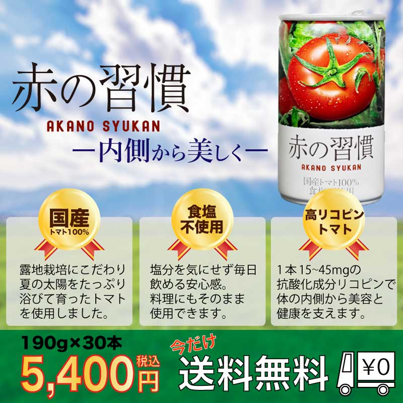

健康志向のユーザーに向けて、商品の特徴と購入メリットを訴求するバナー広告を制作しました。

健康志向のユーザーをターゲットに設定し、 「国産トマト100%」「食塩不使用」「高リコピン」 といった商品の特徴を分かりやすく整理しました。 また、「内側から美しく」というコピーを使用することで、 美容や健康への関心が高いユーザーに訴求できるよう意識しました。
商品パッケージを大きく配置することで、 一目で何の商品か分かるレイアウトにしました。 また、商品の特徴をメダル風のデザインで強調し、 ユーザーが視覚的に情報を認識しやすいよう工夫しています。
価格や送料無料の情報は下部に大きく配置し、 購入時のメリットが伝わるようにデザインしました。
制作当時は商品の特徴をできるだけ多く伝えることを意識していましたが、 現在なら情報量を整理し、 「興味を持たせてクリックしてもらう」 という広告本来の目的をより重視したデザインに改善したいと考えています。
また、説明文を減らしてキャッチコピーやビジュアルの訴求力を高め、 短時間で商品の魅力が伝わる構成を目指したいです。
バナー制作では、情報を多く掲載するだけではなく、 「何を優先して伝えるか」を整理することが重要であると学びました。
また、ターゲットを明確に設定することで、 デザインやコピーの方向性を決めやすくなり、 より効果的な訴求につながることを実感しました。